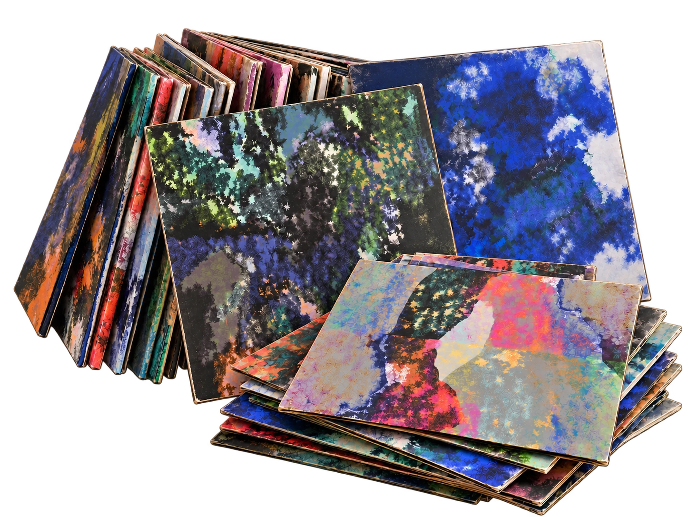

02 — Label
4Spur
Records.
Unabhängiges Label für Dub, Reggae, Hip-Hop, Electronic, Ambient und House Music. Hier findest du alle Releases im Überblick.

Archiv
Releases, neueste zuerst. Klick auf ein Cover für mehr Details, oder entdecke die .
Cover Art by Obruni Antwi